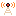
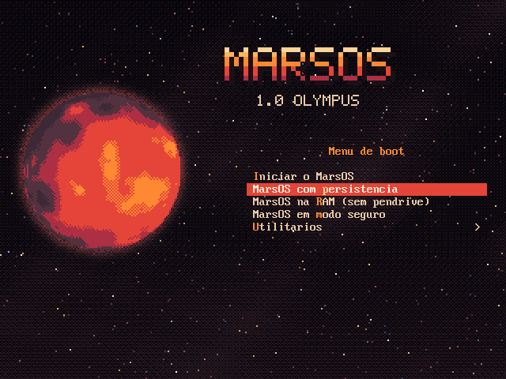
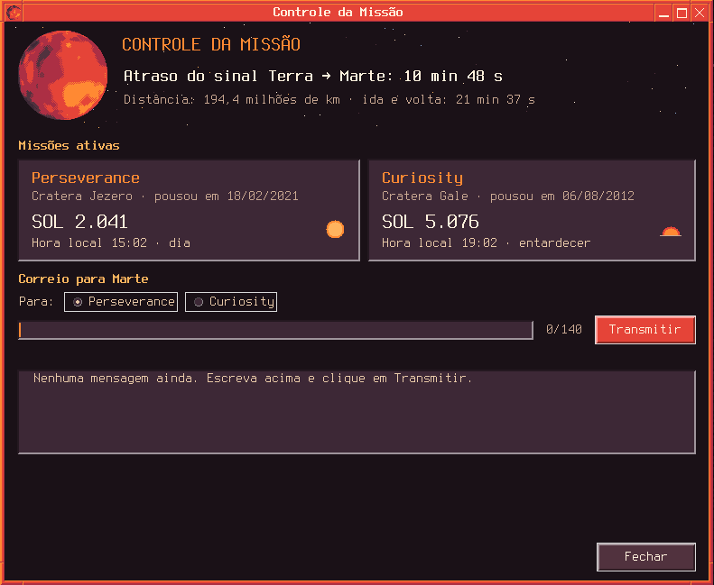
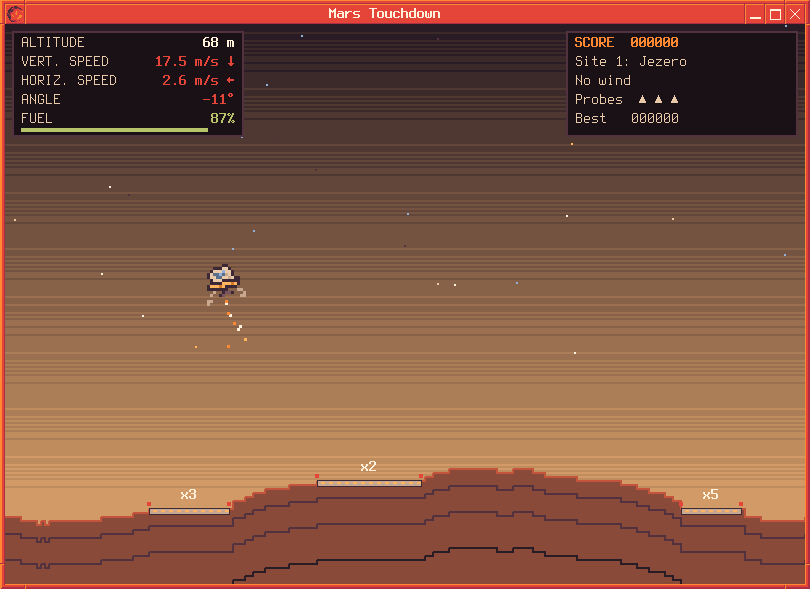
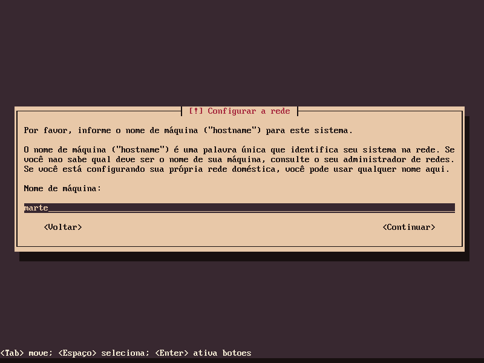
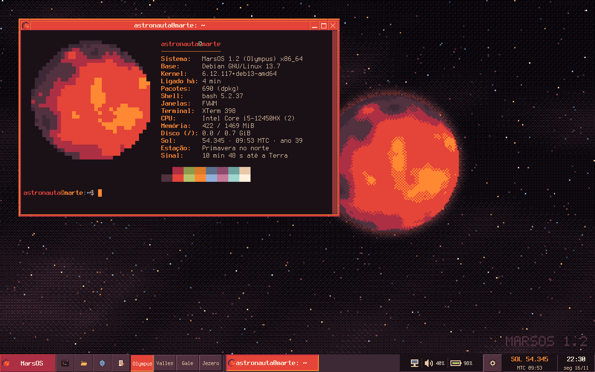
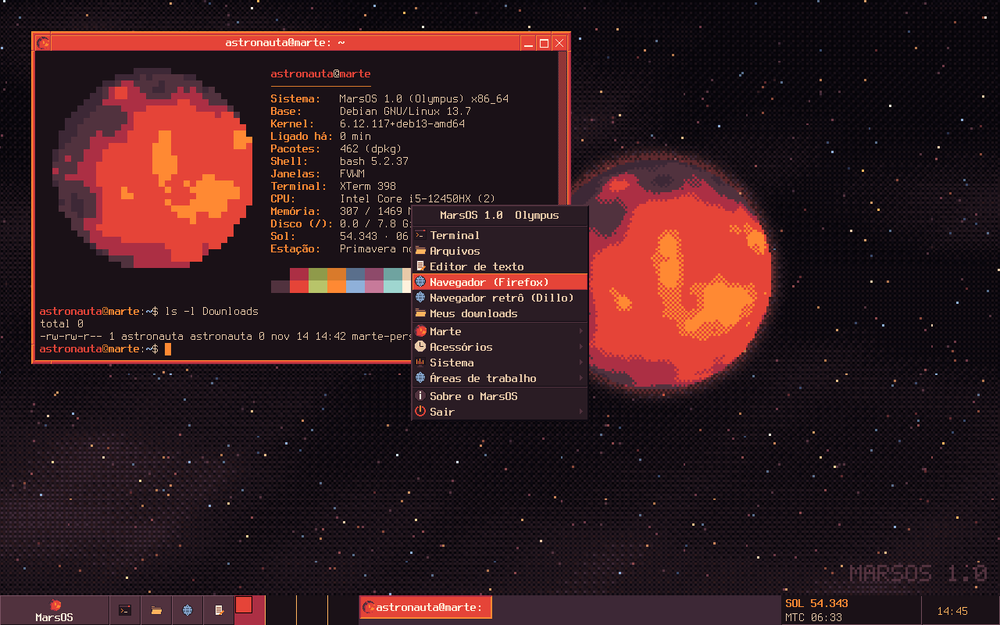
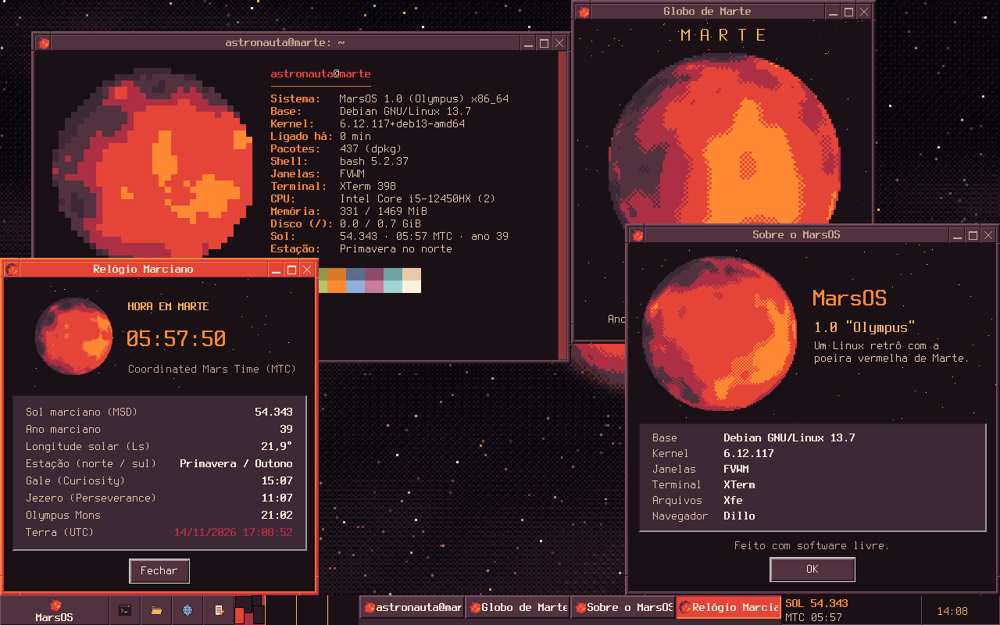
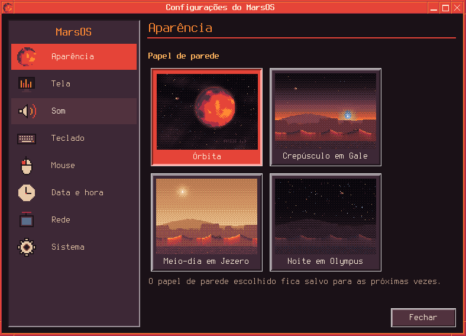
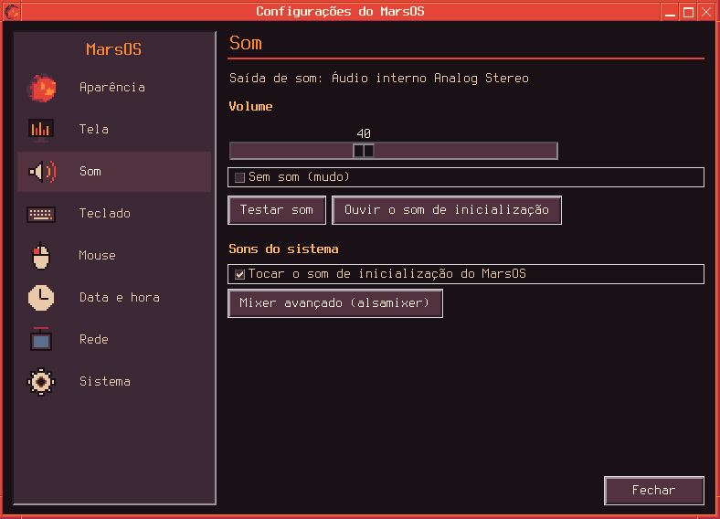

MARSOS
1.2 OLYMPUS
Um Linux retrô com a poeira vermelha de Marte.
Base Debian 13, cara de Linux dos anos 90: boot em texto, janelas FVWM, fontes bitmap, som chiptune, um relógio que marca a hora em Marte e um jogo de pouso. Em português ou inglês, live ou instalado.
O que vem a bordo
Boot retrô
Menu com o planeta onde você escolhe português ou inglês, mensagens do kernel em texto e console com paleta marciana.
Instale no disco
Um instalador em modo texto com as cores de Marte copia o sistema para o seu disco, com seu usuário e senha.
Janelas FVWM
O gerenciador clássico dos anos 90, com painel (rede, bateria, relógio marciano) e 4 áreas de trabalho: Olympus, Valles, Gale e Jezero.
Hora em Marte
Sol marciano, horário MTC, estação e hora local onde estão o Curiosity e o Perseverance, pelo algoritmo Mars24 da NASA.
Atraso do sinal
A distância até a Terra e quanto tempo uma mensagem de rádio leva para chegar lá (de 3 a 22 minutos), pelas órbitas do JPL.
Pouso Marciano
Um jogo original: cinco locais de pouso reais, gravidade de Marte, pouco combustível e o vento das tempestades de poeira.
Som
PipeWire, volume no painel, som de inicialização chiptune e sons suaves para janelas, áreas de trabalho e avisos.
Captura de tela
Print Screen para a tela, Alt para uma janela, Shift para escolher uma área. Vai para Imagens.
Configurações
Painel de controle retrô: papel de parede, resolução, som, teclado, mouse, fuso horário, rede, idioma e sistema.

Controle da Missão
O sol e a hora local da Perseverance e da Curiosity, e o Correio para Marte: a mensagem chega ao rover com o atraso real do sinal, e a resposta volta depois do mesmo tempo.
Sons de Marte de verdade
Tema de sons opcional feito com gravações da Perseverance em Marte: vento, redemoinho de poeira, o laser e o helicóptero Ingenuity (NASA).
Apps do dia a dia
AbiWord, Gnumeric, mpv, mtPaint, xarchiver, GParted, Firefox e Dillo, todos com as cores de Marte, e cada arquivo abre no programa certo.
Persistência
Rode do pendrive e mantenha seus arquivos e programas entre um boot e outro, sem instalar.
Terminal de raiz
XTerm com fonte Terminus, marsfetch, sol, Midnight Commander e htop.
Como ele é



















Baixe o MarsOS
| Arquivo | marsos-1.2-amd64.hybrid.iso |
| Tamanho | 1,06 GB |
| Versão | 1.2 "Olympus" (português e inglês) |
| Base | Debian GNU/Linux 13 (trixie), kernel 6.12 |
| Boot | BIOS e UEFI (ISO híbrida: CD, pendrive ou VM) |
| SHA-256 | 3ec621ebd393726b101ec04da64a854a89b36bc386b4236d23ca5d3320360f33 |
Requisitos
- PC 64 bits (x86-64)
- 1,5 GB de RAM (2 GB recomendado)
- Pendrive de 2 GB ou mais
- Roda direto do pendrive; para instalar, 8 GB de disco
Login
Entra sozinho como astronauta.
Senha, se pedir: live
Como usar
Grave num pendrive
No Windows use o Rufus (modo imagem DD) ou o balenaEtcher. No Linux:sudo dd if=marsos-1.2-amd64.hybrid.iso of=/dev/sdX bs=4M status=progressDê boot
Reinicie o PC, escolha o pendrive no menu de boot (geralmente F12, F11 ou Esc) e selecione Iniciar o MarsOS - Portugues.Ou use uma máquina virtual
No VirtualBox: tipo Debian 64-bit, 2 GB de RAM, controladora gráfica VMSVGA e áudio Intel HD Audio. Coloque a ISO no drive de CD e ligue.Quer salvar seus arquivos?
Crie no pendrive uma partição ext4 chamadapersistencecom um arquivopersistence.confcontendo/ union. Depois inicie com Persistencia - Portugues.Ou instale
Escolha Install MarsOS / Instalar no menu de boot. O instalador pergunta o idioma, o disco, o usuário e a senha, e copia o MarsOS para o disco.
astronauta@marte:~$ sol
Perguntas frequentes
O MarsOS apaga meu Windows?
Como troco entre português e inglês?
O que é o atraso do sinal?
sol no terminal para ver o atraso de hoje.Onde ficam os arquivos que eu baixo?
Downloads (menu → Meus downloads). No modo normal tudo some ao desligar; para guardar, use o modo com persistência.Como instalo outros programas?
sudo apt update e depois sudo apt install nome-do-programa. Com persistência, o programa continua lá depois de reiniciar.Como mudo o teclado, o mouse ou a resolução?
Dá para gerar a ISO eu mesmo?
sudo ./build.sh. O GitHub Actions também gera a ISO sozinho, e no Windows existem scripts que fazem tudo usando o VirtualBox.